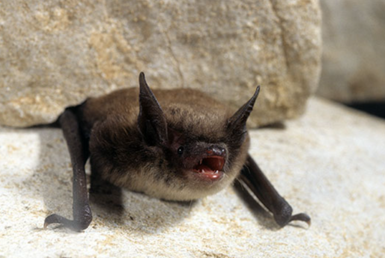
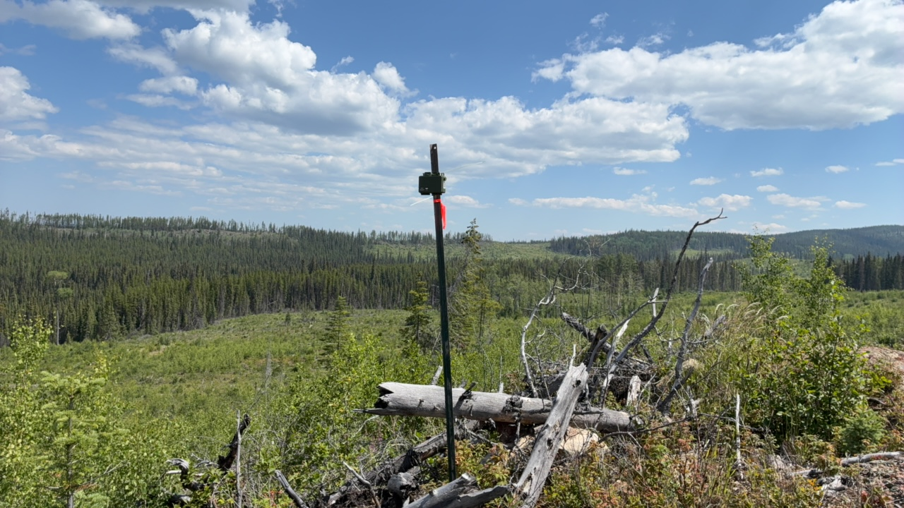
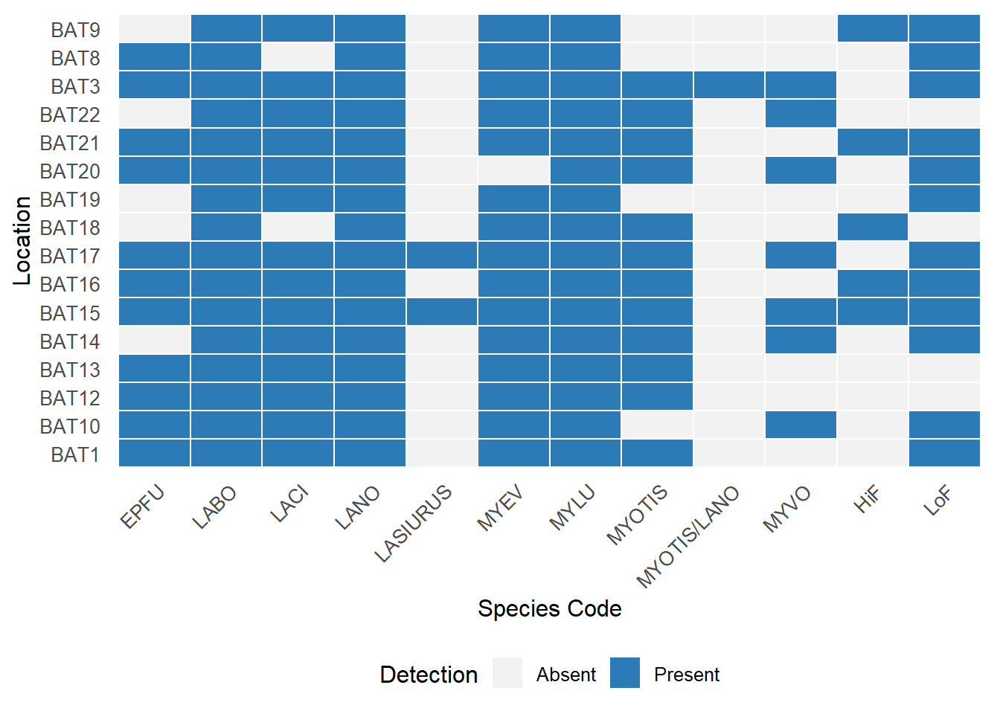
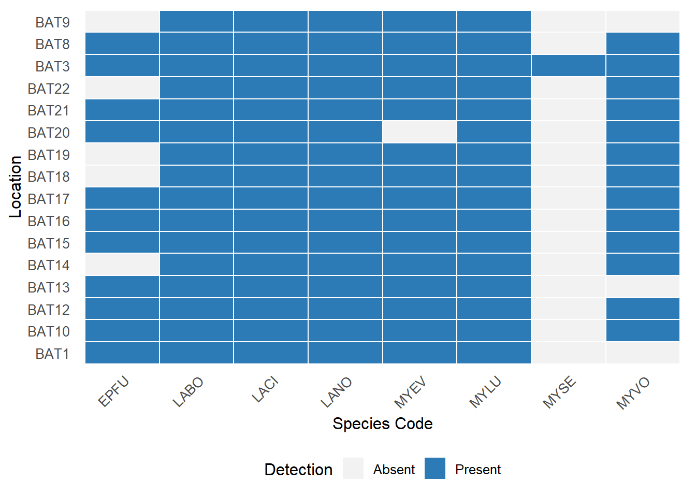
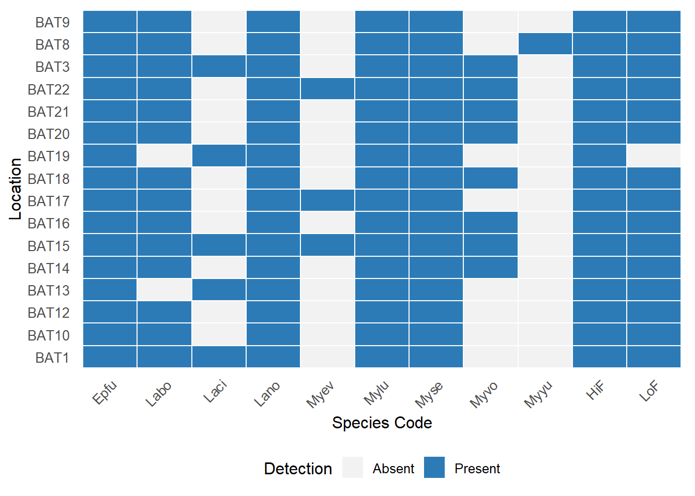

Land Acknowledgement
Biodiversity Pathways respectfully acknowledges that our work takes place on Treaty 8 and Douglas Treaties Territories as well as the traditional and unceded territories of First Nations and Métis Peoples across all regions of British Columbia, whose histories, languages, and cultures are deeply connected to the biodiversity we monitor. We acknowledge the traditional teachings of the lands that we work on, and that reciprocal, meaningful, and respectful relationships with Indigenous peoples make our work possible. We are deeply grateful for their stewardship of these lands, and we are committed to supporting Indigenous-led monitoring programs, while learning Indigenous ways of knowing, being, and doing.
Introduction
Overview of NABat and the NNW Bat Hub
The North American Bat Monitoring Program (NABat) is a large-scale coordinated effort to monitor bat species across North America using standardized protocols and a unified sample design (Loeb et al. 2015). NABat was established to address the gaps in knowledge and lack of long-term studies of bat species across Mexico, USA, and Canada. The program is administered by the US Geological Survey (USGS), coordinated by the Canadian Wildlife Health Cooperative (CWHC) in Canada, and implemented by the North by Northwest Bat (NNW) Hub in British Columbia, Alberta, and S.E. Alaska.
2025 NABat Monitoring in Blackwater Gold Mine
In the field season of 2025, 18 bat acoustic deployments were made at the Blackwater Gold Mine managed by BW Gold. The monitoring stations collected data between 2025-07-15 and 2025-07-31. The recordings were submitted to SENSR for processing and manual vetting to determine species presence or absence at each location. Upon agreement with BW Gold, SENSR can share these results with the NNW Bat Hub for inclusion in the provincial annual report on the state of bat populations within British

Methods
Field Deployments
In 2025, BW Gold deployed 18 across Blackwater Gold Mine (Figure 1) following the standards set by NABat and the North by Northwest (NNW) Bat Hub (Reichert et al. 2018). All of these locations were new deployments for 2025 and collected data for a total of 127 ARU nights. ARU nights quantify the total acoustic sampling effort by summing the number of nights each ARU was deployed and recording. This metric accounts for all individual recorder deployments, such that two ARUs recording for seven nights each would equal 14 ARU nights total, even if deployed concurrently.
Data processing
Full-spectrum recordings from the sampling periods were collected and processed using two automatic classifiers: Kaleidoscope’s Bats of North America 5.4.0 classifier and Sonobat 3.0’s northeastern British Columbia classifier. Based on documented species ranges and prior detection data, manual verification efforts focused on the species present at each individual site.
The analysis workflow followed processing standards established by the North American Bat Monitoring Program (NABat) (Reichert et al. 2018). Only recordings that received automated species classifications from either Kaleidoscope or Sonobat were selected for manual verification. For stationary acoustic monitoring sites, recordings were manually vetted until at least one recording per species per site per night was confidently identified. Species identifications were validated using reference call parameters described by Szewczak (2018), Slough et al. (2022), and Solick (2022), in accordance with NABat manual vetting protocols. A full list of species names and codes can be found on Appendix A
All recordings with their associated tags have been uploaded to Wildtrax to the project named Blackwater Gold Mine NABAT Monitoring. All the associated tags have also been uploaded to NABat undet the project name Blackwater Gold Mine NABAT Monitoring.
Results
Following manual verification, Eastern Red Bats (Lasirus borealis), Silver-haired bats (Lasionycteris noctivagans), and Little Brown Myotis (Myotis lucifugus) were detected at all surveyed locations (Figure 2). Long-eared Myotis (Myotis evotis) was detected at all surveyed locations except for at BAT20, their presence at this site remains plausible given regional distributions. Hoary bats (Lasirus cinereus) were detected at all sites except BAT18 and BAT8; however, their presence at this site remains plausible given regional distributions.



Recomendations
Overall, deployments performed well. We recommend verifying deployment settings, as the unit BAT14_73082 appeared to collect a high volume of noise files at regular 15-minute intervals. This pattern suggests that both triggered and scheduled recordings may have been enabled. Running both modes concurrently can deplete batteries quicker; therefore, we recommend using triggered recordings only when the objective is bat monitoring.
This represents the first year of acoustic bat monitoring in this region, and continued monitoring is strongly encouraged to establish a robust baseline for long-term assessment. Sustained data collection over multiple years is critical for evaluating temporal patterns for bat species in the region. After a minimum of five consecutive years of monitoring, the dataset will be sufficient to support meaningful trend analyses and habitat association assessments, enabling more reliable evaluation of the persistence and distribution of bat species across the landscape.
Appendix A
Species codes and their definitions
CommonName | ScientificName | Code | Definition |
|---|---|---|---|
Big Brown Bat | Eptesicus fuscus | EPFU | Calls that have diagnostic features identifying it as Eptesicus fuscus |
Big Brown Bat / Hoary Bat | Eptesicus fuscus / Lasiurus cinereus | EPFULACI | Calls that could be attributed to either Eptesicus fuscus or Lasiurus cinereus |
Big Brown Bat / Silver-haired Bat | Eptesicus fuscus / Lasyonicteris noctivagans | EPFULANO | Calls that could be attributed to either Eptesicus fuscus or Lasyonicteris noctivagans |
Eatern Red Bat | Lasiurus borealis | LABO | Calls that have diagnostic features identifying it as Lasiurus borealis |
Eastern Red Bat / Little Brown Myotis | Lasiurus borealis / Myotis Lucifugus | LABOMYLU | Calls that could be attributed to either Lasiurus borealis or Myotis lucifugus |
Hoary Bat | Lasiurus cinereus | LACI | Calls that have diagnostic features identifying it as Lasiurus cinereus |
Bat from the Lasiurus genus | Lasiurus species | LASIURUS | Calls that have diagnostic features identifying it as Lasiurus species |
Hoary Bat / Silver-haired Bat | Lasiurus cinereus / Lasyonicteris noctivagans | LACILANO | Calls that could be attributed to either Lasiurus cinereus or Lasyonicteris noctivagans |
Silver-haired Bat | Lasyonicteris noctivagans | LANO | Calls that have diagnostic features identifying it as Lasyonicteris noctivagans |
Western Small-footed Myotis | Myotis ciliolabrum | MYCI | Calls that have diagnostic features identifying it as Myotis ciliolabrum |
Western Small-footed Myotis / Little Brown Myotis | Myotis ciliolabrum / Myotis lucifugus | MYCIMYLU | Calls that could be attributed to either Myotis ciliolabrum or Myotis lucifugus |
Western Small-footed Myotis / Long-legged Myotis | Myotis ciliolabrum / Myotis volans | MYCIMYVO | Calls that could be attributed to either Myotis ciliolabrum or Myotis volans |
Long-eared Myotis | Myotis evotis | MYEV | Calls that have diagnostic features identifying it as Myotis evotis |
Little Brown Myotis | Myotis lucifugus | MYLU | Calls that have diagnostic features identifying it as Myotis lucifugus |
Little Brown Myotis / Northern Myotis | Myotis lucifugus / Myotis septentrionalis | MYLUMYSE | Calls that could be attributed to either Myotis lucifugus or Myotis septentrionalis |
Bat from the Myotis genus | Myotis species | MYOTIS | Calls that have diagnostic features identifying it as Myotis species |
Northern Myotis | Myotis septentrionalis | MYSE | Calls that have diagnostic features identifying it as Myotis septentrionalis |
Long-legged Myotis | Myotis volans | MYVO | Calls that have diagnostic features identifying it as Myotis volans |
Unknown Bat | NOID | Bat calls but no grouping category applies | |
No Bat | NOISE | No bat recorded | |
40kHz Frequency Myotis | 40KMYO | Various species of Myotis that have a characteristic frequency in the range of 35-40kHz | |
High Frequency Bat | HighF | Various species with pulses having a characteristic frequency higher than ~35kHz | |
Low Frequency Bat | LowF | Various species with pulses having a characteristic frequency lower than ~30kHz |
Literature Cited
CWHC-RCSF. 2024. “Canadian Wildlife Health Cooperative - Réseau Canadien Pour La Santé de La Faune.” 2024. https://www.cwhc-rcsf.ca/white_nose_syndrome_reports_and_maps.php.
Energy and Climate Solutions, Ministry of. 2024. “BC Gov News.” December 9, 2024. https://news.gov.bc.ca/releases/2024ECS0048-001643.
Friedenberg, Nicholas A., and Winifred F. Frick. 2021. “Assessing Fatality Minimization for Hoary Bats Amid Continued Wind Energy Development.” Biological Conservation 262 (October): 109309. https://doi.org/10.1016/j.biocon.2021.109309.
Loeb, Susan C., Thomas J. Rodhouse, Laura E. Ellison, Cori L. Lausen, Jonathan D. Reichard, Kathryn M. Irvine, Thomas E. Ingersoll, et al. 2015. “A Plan for the North American Bat Monitoring Program (NABat).” SRS-GTR-208. Asheville, NC: U.S. Department of Agriculture, Forest Service, Southern Research Station. https://doi.org/10.2737/SRS-GTR-208.
Olson, Cory. n.d. “Bat Profiles.” Alberta Community Bat Program. Accessed March 6, 2025. https://www.albertabats.ca/batprofiles/.
Rae, Jason, and Cori L Lausen. 2022. “North American Bat Monitoring Program in British Columbia: 2021 Data Summary and Activity Trend Analyses (2016-2021).” Wildlife Conservation Society of Canada.
———. 2024. “North American Bat Monitoring Program in British Columbia: 2023 Data Summary and Activity Trend Analyses (2016-2023).” Wildlife Conservation Society of Canada.
Reichert, Brian, Cori Lausen, Susan Loeb, Theodore J. Weller, Ryan Allen, Eric Britzke, Tara Hohoff, et al. 2018. “A Guide to Processing Bat Acoustic Data for the North American Bat Monitoring Program (NABat).” Open-File 2018–1068. U.S. Geological Survey.
Slough, Brian, Cori Lausen, Brian Paterson, Ingebjorg Hansen, Julie Thomas, Piia Kukka, Thomas Jung, Jason Rae, and Debbie Wetering. 2022. “New Records about the Diversity, Distribution, and Seasonal Activity Patterns by Bats in Yukon and Northwestern British Columbia.” Northwestern Naturalist 103 (August): 162–82. https://doi.org/10.1898/NWN21-10.
Solick, Donald. 2022. “Bat Acoustic Species-Pair Matrix Western US/Canada.” 2022. https://www.batacousticsurveys.com/_files/ugd/a1e0ca_0ed9c3172b9145e49c50eb7a7712f909.pdf.
Status of Endangered Wildlife in Canada, Committee on the. 2023. “Hoary Bat (Lasiurus Cinereus) Eastern Red Bat (Lasiurus Borealis) Silver-haired Bat (Lasionycteris Noctivagans): COSEWIC Assessment and Status Report 2023.” 2023. https://www.canada.ca/en/environment-climate-change/services/species-risk-public-registry/cosewic-assessments-status-reports/hoary-bat-eastern-red-bat-silver-haired-bat-2023.html.
Stratton, Christian, Kathryn M. Irvine, Katharine M. Banner, Wilson J. Wright, Cori Lausen, and Jason Rae. 2022. “Coupling Validation Effort with in Situ Bioacoustic Data Improves Estimating Relative Activity and Occupancy for Multiple Species with Cross‐species Misclassifications.” Methods in Ecology and Evolution 13 (6): 1288–1303. https://doi.org/10.1111/2041-210X.13831.
Szewczak, Joe. 2018. “Acoustic Features of Western US Bats.” Humboldt State University Bat Lab.
USFWS, U. S. Fish and Widlife Service. 2025. “White-Nose Syndrome.” 2025. https://www.whitenosesyndrome.org/.
Zimmerling, J. Ryan, and Charles M. Francis. 2016. “Bat Mortality Due to Wind Turbines in Canada.” The Journal of Wildlife Management 80 (8): 1360–69. https://doi.org/10.1002/jwmg.21128.